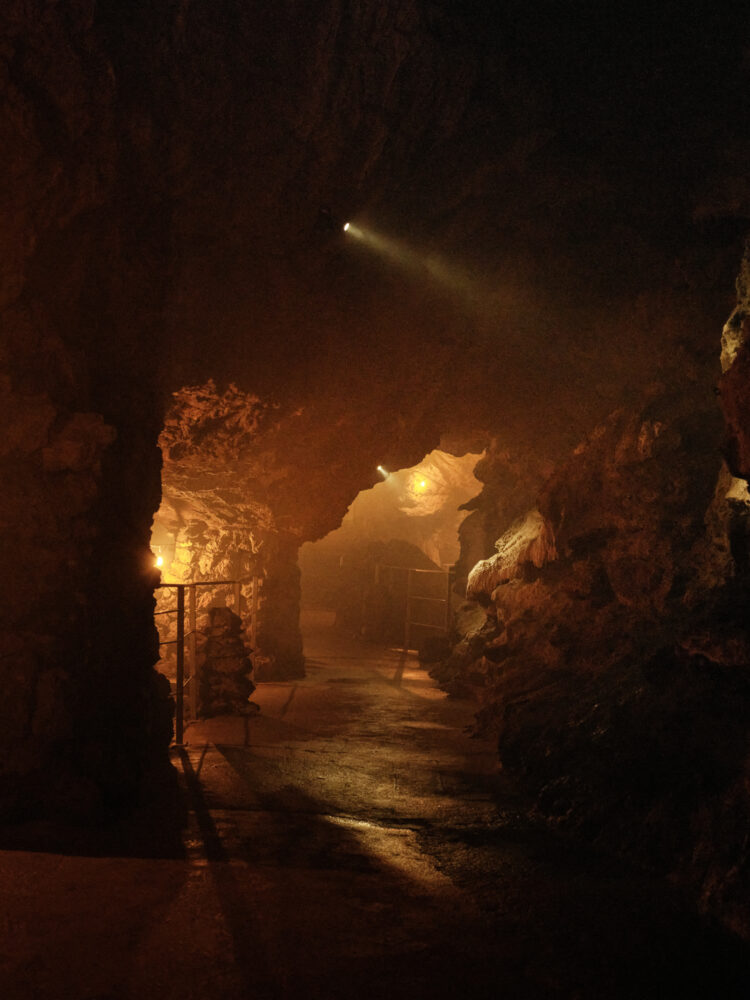
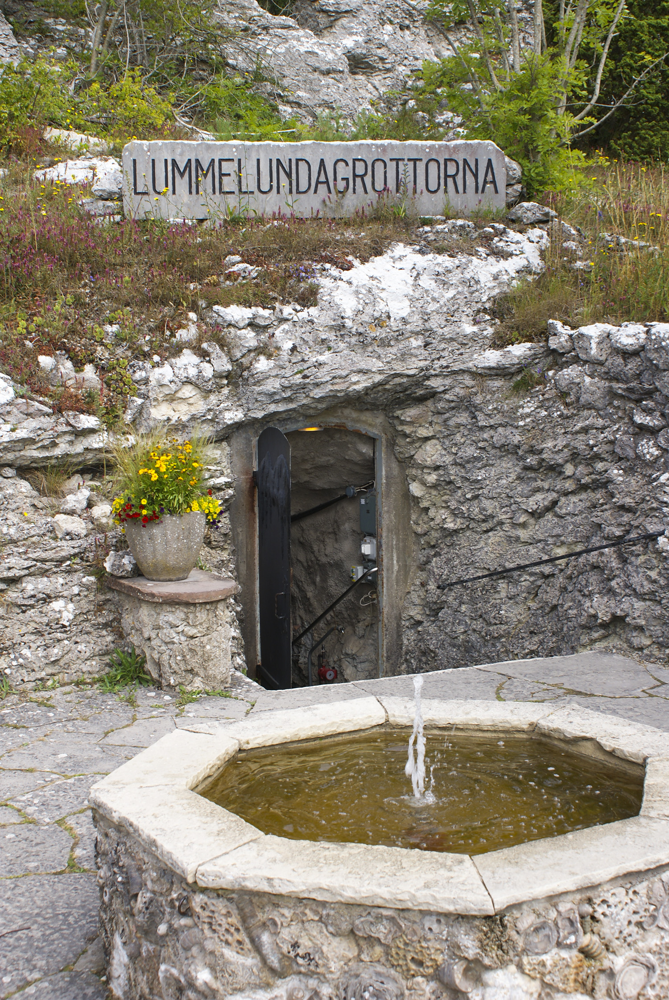
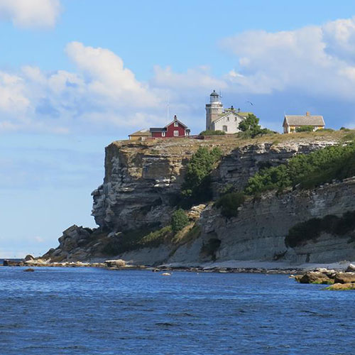
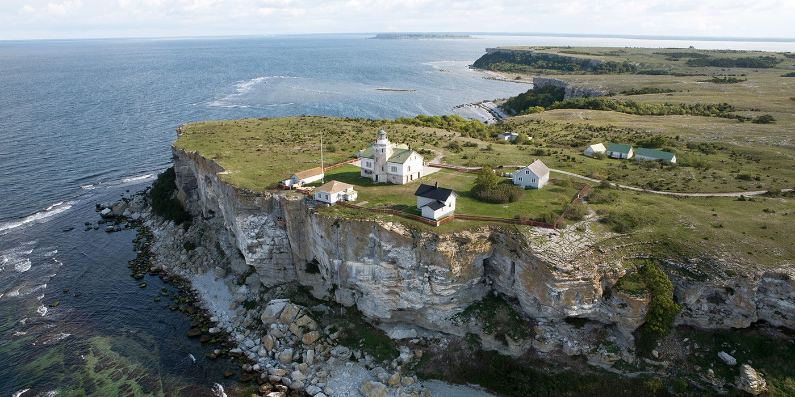

Visby innerstad
Visby innerstad är en av Sveriges bäst bevarade medeltida stadsmiljöer. Här möts smala kullerstensgator, gamla stenhus, kyrkoruiner och små gränder innanför den välkända ringmuren.
Under medeltiden var Visby en viktig handelsstad i Östersjöområdet och hade en central roll inom Hansan. Sedan 1995 finns Hansestaden Visby med på UNESCO:s världsarvslista tack vare den välbevarade stadsmiljön och dess historiska betydelse.
I dag finns restauranger, caféer, butiker och flera historiska sevärdheter runt om i innerstaden. Stora torget, Visby domkyrka och de många kyrkoruinerna är några av platserna som är värda ett besök.
Visby ringmur
Visby ringmur omger stora delar av den historiska innerstaden och är ett av Gotlands mest kända landmärken. Muren började byggas under 1200-talet och är ungefär 3,4 kilometer lång.
Ringmuren byggdes som ett försvar för den medeltida staden och består av höga kalkstensmurar, portar och försvarstorn. Stora delar av muren finns fortfarande kvar och den räknas som en av Europas bäst bevarade medeltida stadsmurar.
Det går att promenera längs stora delar av muren och från flera platser får man utsikt över både Visby och Östersjön. En promenad runt muren tar ungefär 45–60 minuter.
Langhammars på Fårö:
Hoburgen och Sundre:
Lummelundagrottan:
I Lummelundagrottan kan du gå med på spännande guidade turer där du åker båt längs en underjordisk å och utforskar grottans labyrinter. Du får se maffiga droppstenar som stalaktiter och stalagmiter samt uråldriga fossiler inbäddade i bergväggarna. Det är en fascinerande upplevelse under jord som passar perfekt för både äventyrare och historieintresserade


Stora Karlsö:
På Stora Karlsö kan du ta en båttur ut till naturreservatet för att vandra längs kusten och uppleva den unika ön på en guidad tur. Du får se tusentals häckande sillgrisslor och tordmular som flyger kring de dramatiska, lodräta kalkstensklintarna. Ön bjuder dessutom på sällsynta orkidéer och en fantastisk utsikt över Östersjön från den historiska fyren.

